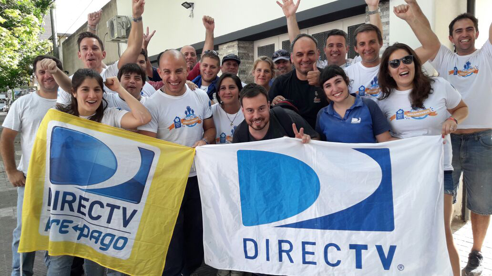

Aldo Palacios, director de la escuela N° 4526
El Rosal, en Salta.
“De a poco nos vamos familiarizando y logrando mejores resultados en el aprendizaje de los alumnos. Las herramientas del programa facilitan nuestro trabajo”.
Llevamos Escuela+
cada vez mas lejos
Realizamos una verdadera expedición para anunciar la llegada de Escuela+ a más de 123 escuelas rurales del norte argentino, con el objetivo de complementar la enseñanza y mejorar su conectividad acortando la brecha digital.
Además, capacitamos a docentes para que puedan aplicar los recursos del programa educativo en la Base Esperanza de la Antártida Argentina.

CONECTAMOS
INNOVACIÓN
Trabajamos con el Ministerio de Educación, Ciencia y Tecnología de la Provincia de Salta y el Ministerio de Educación de Tierra del Fuego.
SOCIOS
Escuela+ cuenta con la tecnología satelital de DIRECTV y el contenido educativo de Discovery en la Escuela, National Geographic, Takeoff Media, Torneos y Disney.

Víctor Navarro Salazar y Mariana Ibarra, docentes en la Antártida
“El programa Escuela+ va a ser muy importante para nuestro trabajo diario, porque complementa las clases”.
“El programa Escuela+ va a ser muy importante para nuestro trabajo diario, porque complementa las clases”.
II Congreso Escuela+,
el evento destacado del año
Por primera vez en Argentina, realizamos el II Congreso Iberoamericano Escuela+ “Multipantallas en el aula”, con reconocidos oradores del ambiente académico internacional.
Más de 500 personas participaron del evento sobre educación, que superó expectativas y tuvo una gran difusión.

CONECTAMOS
VALOR
El evento fue reconocido por la Legislatura Porteña como un “Congreso de Interés Educacional de la Ciudad de Buenos Aires”.

Impulsamos el cine
en la region
Fuimos parte de la segunda edición del Festival Académico de Cine Universitario (FACIUNI), que impulsa el cine en la región y promueve la formación de futuros cineastas. En Argentina, el evento contó con la presencia del director de cine y ganador del Oscar, Juan José Campanella, que brindó una masterclass para estudiantes de cine.
Además, se difundieron los cortos ganadores de la cuarta edición del certamen DIRECTV Cinema+, un concurso que premia con dinero y becas de estudio a jóvenes universitarios.
CONECTAMOS
SOCIOS
DIRECTV Cinema+ es el compromiso de nuestra compañía y socios como Sundance Channel y Creative Artists Agency.

Juan José Campanella, director de cine y ganador del Oscar
"El cine latinoamericano ha ido creciendo aceleradamente a lo largo de los años debido al desarrollo del talento de nuestros cineastas y su habilidad para contar historias propias".
"El cine latinoamericano ha ido creciendo aceleradamente a lo largo de los años debido al desarrollo del talento de nuestros cineastas y su habilidad para contar historias propias".
Voluntarios
que multiplican beneficios
A través de nuestros voluntarios donamos horas a organizaciones sociales que en distintos puntos del país contribuyen con proyectos sostenibles para los que más necesitan. Como en Santa Fe, que realizamos mejoras en la casa de Valentín Olmedo, un jugador de la Selección Nacional de Fútbol en silla de ruedas, y esta acción nos permitió concientizar sobre la problemática de la discapacidad. También fuimos parte de la acción de voluntariado regional Piedra, Papel, Tijera en Perú, que les llevó soluciones a las familias afectadas por los aludes.
CONECTAMOS
ALIADOS
Apoyamos a varias organizaciones, como Fundación Sí y Powerchair Football, con las que trabajamos en diferentes iniciativas de responsabilidad social.
VALOR
Por quinto año consecutivo DIRECTV Argentina fue elegida como la empresa más solidaria de Vicente López, gracias a las iniciativas que desarrolló en esa comunidad.
